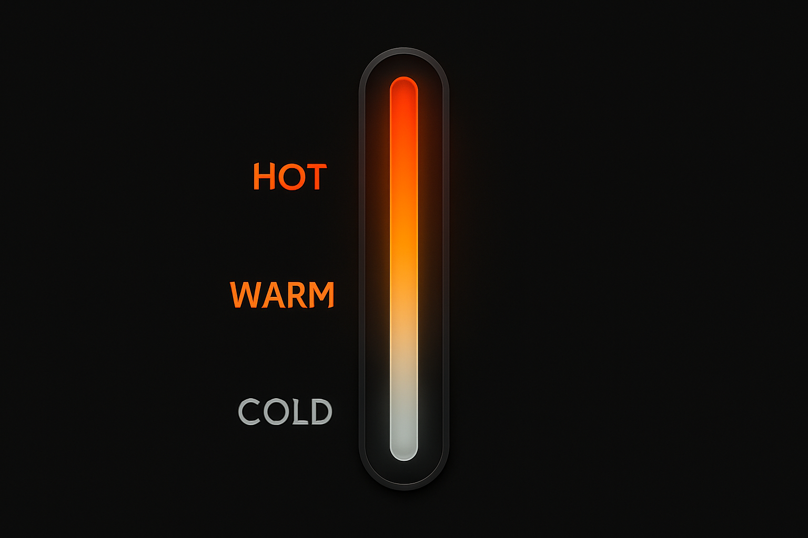
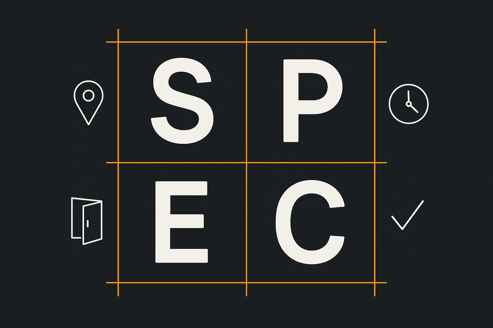
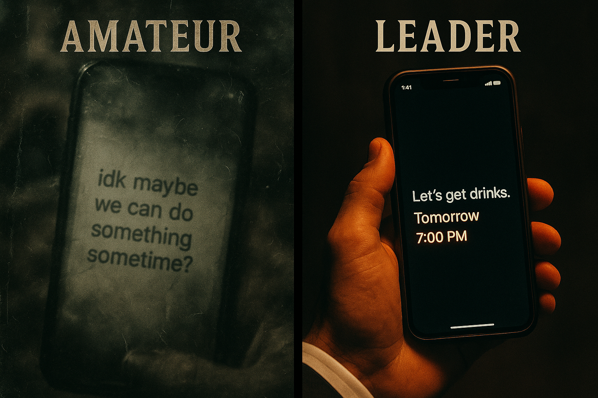

You will master the SPEC system for crafting concrete, compelling invitations that get a clear "yes" or "no." Eliminate the "we should hang out sometime" limbo and lead interactions to decisive action.
Leadership = clear direction, not vague hints.
THE FLAW: THE "MAYBE" TRAP
Vague invites breed vague answers. Saying "We should do something sometime" signals indecision and pushes the logistical burden onto others—an instant attraction killer.
The "maybe" trap keeps you spinning in circles.
"Spark comes from conversation; commitment comes from leadership."
DOCTRINE: CLARITY COMMANDS RESPECT
Leaders paint a vivid picture of the future. The SPEC framework provides laser-focused clarity that makes accepting invitations effortless.

Read the temperature before deploying your invitation.
Temperature Check
Deploy SPEC only when the interaction is Hot (high engagement). Using it on a Cold interaction wastes your energy.
Specific plans outperform vague invites—instantly.
PROTOCOL: THE SPEC FRAMEWORK
This four-part system makes your invitations irresistible and easy to accept.

The four pillars of a compelling invitation.
S
Specific Activity
"Saturday jazz at Bryant Park" not "hang out"
P
Precise Time
"2-4 PM" not "sometime Saturday"
E
Exit Clause
"I've got dinner after" removes pressure
C
Confirmation Deadline
"Let me know by Thursday" creates urgency
PROTOCOL: DEPLOYMENT
You've learned she loves live music and is free on weekends. The vibe is Hot.
"I'm catching a jazz trio at Bryant Park this Saturday from 2-4 PM.
I have dinner plans afterward, but you should join if you're free.
Let me know by Thursday so I can lock it in."

The difference between amateur and pro invitations.
The Leadership Signal
This isn't just a plan; it signals competence: "I value my time and want you in my world." Far stronger than "So... what do you want to do?"
THE DRILL: 7-DAY LEADERSHIP CHALLENGE
Turn insight into action by practicing SPEC every day this week.
Day 1
Draft one all-purpose SPEC invitation
Day 2
Write a SPEC invite for a different activity
Day 3
Label conversation temperatures accurately
Day 4
Turn a Warm interaction Hot—no invite yet
Day 5
Deploy your first SPEC invite
Day 6
Review results and refine approach
Day 7
Deploy second SPEC invite and compare
Leadership Installed
You now convert opportunity into decisive action—no more "maybe" limbo.